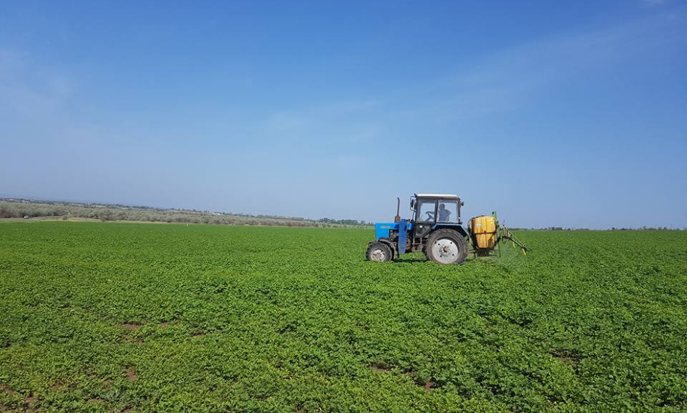

Центр поддержки экспорта, в студии Павел Тулба
12.04.2019
Сельскохозяйственный обслуживающий кооператив “Орех Причерноморья” предлагает своим клиентам выгодные условия сотрудничества. Ореховый бизнес – один из наиболее перспективных в Украине. Ежегодная нехватка продукта в Европе составляет 100 000 тонн. У Вас есть возможность зарабатывать десятки тысяч долларов в год всего на нескольких гектарах земли.
Предприятие основано в 2012 году для закладки смешанного сада грецкого ореха и фундука в Одесской области. На сегодня уже заложено более 200 гектаров сада и этот процесс продолжается. Кооператив предоставляет полный цикл сопровождения: от выращивания до сбыта.
Кроме выращивания грецкого ореха и фундука, компания занимается выращиванием саженцев, разведением и выращиванием овец, а также является первой в Украине компанией, приступившей к промышленному выращиванию трюфелей на корнях фундука.
В Украине появится первое насаждение органического шиповника
Наш сельскохозяйственный обслуживающий кооператив «Орех Причерноморья» был основан в 2012-ом году для закладки смешанного сада грецкого ореха и фундука. На данный момент во владении нашей компании находится 1 гектар тепличной площади и 270 гектар садовой площади, которую мы планируем расширять. «Орех Причерноморья» включен в реестр Министерства Аграрной Политики Украины.
Смешанный сад грецкий орех+шиповник
- Возможность полной механизации всех работ по саду
- Невысокая стоимость смешанного сада при закладке
- Необходимость в интенсивном поливе только первые четыре года
- Долгий срок хранения готовой продукции и унификация сушильных камер и складов для хранения
В Украине появится первое насаждение органического шиповника
Сельскохозяйственный обслуживающий кооператив “Орех Причерноморья” предлагает своим клиентам выгодные условия сотрудничества. Ореховый бизнес – один из наиболее перспективных в Украине. Ежегодная нехватка продукта в Европе составляет 100 000 тонн. У Вас есть возможность зарабатывать десятки тысяч долларов в год всего на нескольких гектарах земли.
Нами разработано и опробовано на собственной практике предложение для закладки многолетних насаждений шиповника, на земельных участках не пригодных к традиционному земледелию. Первых 5 гектар промышленной плантации шиповника, были высажены на месте бывшей сельской свалки и остатков разрушенной молочно товарной фермы.
Последние публикации
ОРЕХ ПРИЧЕРНОМОРЬЯ
Присоединяйтесь к нам в соц. сетях